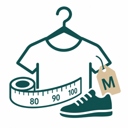

買い物 / 家族管理
買い物プロフィール
家族や自分の服・靴・好みのサイズをまとめて管理するアプリ。
服や靴を買うとき、子ども服を選ぶとき、プレゼントを探すときに「サイズはいくつだったか」「よく買うブランドは」「苦手な色や避けたい素材は」をその場ですぐ確認できます。データは端末内保存のみで、外部送信はありません。
- 人ごとにサイズ・ブランド・好みを登録
- 服・靴・指輪・帽子など自由入力に対応
- 買い物中に一覧で確認してコピー
- Face ID / Touch IDでアプリロック可能